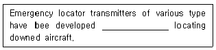
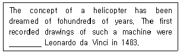
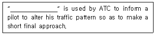
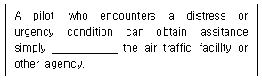
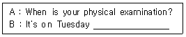
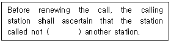
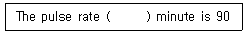
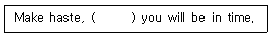
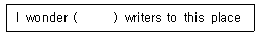

항공무선통신사 (2008-03-30 기출문제)
1과목: 전파법규
1. 다음 중 항공무선통신사의 종사범위가 아닌 것은?
- 항공기를 위한 무선항행국의 무선설비의 통신운용(무선전신 제외)
- 레이더의 외부조정의 기술운용
- 무선 항행국 설비 중 공중선전력 500W 이하의 기술운용
- 항공기에 시설하는 무선설비의 외부조정의 기술운용(무선전신 및 다중무선설비 제외)
(정답률: 78%)

2. 다음 중 방송통신위원회가 전파자원의 공평하고 효율적인 이용을 촉진하기 위하여 필요한 경우에 시행하여야 하는 사항이 아닌 것은?
- 주파수 분배의 변경
- 새로운 기술방식의 전환
- 주파수의 재등록
- 주파수의 공동 사용
(정답률: 44%)
3. 다음 중 의무항공기국의 허가유효기간은?
- 10년
- 5년
- 무기한
- 3년
(정답률: 71%)
4. 다음 중 운용의무시간 외에 의무항공기국을 운용할 수 있는 경우가 아닌 것은?
- 타 통신 연락수단이 없는 경우 긴급한 통보를 항공이동업무국에 송신하는 경우
- 무선국검사에 필요한 경우
- 항행 준비중인 경우
- 항공기 보안사무에 관한 통신을 하는 경우
(정답률: 72%)
5. 다음 중 조난호출을 행한 항공기국이 지체없이 그 조난호출에 이어서 조난통보해야 할 사항이 아닌 것은?
- 조난항공기의 식별표지
- 책임항공국의 호출부호
- 조난항공기의 위치
- 조난의 종류, 상황과 필요로 하는 구조의 종류
(정답률: 75%)
6. 다음은 항공기국의 검사에 관한 설명이다. 옳지 않은 것은?
- 검사관은 조사 목적으로 무선국 허가장의 제시를 요구할 수 있다.
- 명백한 위규사항이 관찰되는 경우에는 무선설비를 검사설비를 검사할 수 있다.
- 검사관은 통신사의 자격중 제시를 요구할 수 있다.
- 검사관은 통신사에게 직무에 관한 전문지식의 입증을 요구할 수 있다.
(정답률: 86%)
7. 다음 중 대한민국 헌법 또는 헌법에 의하여 설치된 국가기관을 폭력으로 파괴할 것을 주장하는 통신을 발한 자에 대한 벌칙은?(관련 규정 개정전 문제로 여기서는 기존 정답인 2번을 누르면 정답 처리됩니다. 자세한 내용은 해설을 참고하세요.)
- 3년 이하의 징역 또는 1,000만원 이하의 벌금
- 3년 이상의 유기징역 또는 금고
- 5년 이하의 징역 또는 5,000만원 이하의 벌금
- 5년 이상의 유기징역 또는 금고
(정답률: 49%)
8. 다음 중 전파사용료를 전부 면제받을 수 있는 무선국이 아닌 것은?
- 도서통신용 고정국의 무선국
- 비상국, 실험국, 아마추어국, 표준주파수 및 시보국
- 대한적십자사조직법에 의한 대한적십자가 시설자인 무선국
- 홍수의 예보, 경보 등 재해예방을 위한 무선국
(정답률: 66%)
9. 다음 중 국제항공고정 무선통신망에 속하는 항공고정국에서 취급하는 통보의 통신의 우선순위를 나타내는 약어로 옳지 않은 것은?
- 제1순위 : "SS"
- 제2순위 : "DD" 또는 "FF"
- 제3순위 : "GG" 또는 "KK"
- 제4순위 : "TT"
(정답률: 77%)
10. 다음 중 의무항공기국의 무선설비로서 A3E 전파 118MHz 내지 136.975MHz의 주파수대의 전파를 사용하는 송신설비의 유효통달거리는? (단, 비행고도 300미터 일 때)
- 50km 이상
- 60km 이상
- 70km 이상
- 80km 이상
(정답률: 68%)
11. 다음 중 선박대 항공기간의 조난형장통신용 주파수가 아닌 것은?
- 2,182 kHz
- 4,125 kHz
- 5,680 kHz
- 6,314 kHz
(정답률: 52%)
12. 다음 중 위상변조 무선전화를 표시하는 전파형식은?
- F3E
- A3E
- G3E
- P3E
(정답률: 54%)
13. 다음 중 국제전파규칙에서 규정한 무선전화의 안전신호는?
- PAN
- MAYDAY
- SAFETY
- SECURITE
(정답률: 68%)
14. 다음 중 비상위치지시용 무선표지국에서 송신하는 통보는 무엇으로 보는가?
- 조난통신
- 긴급통신
- 안전통신
- 비상통신
(정답률: 55%)
15. 다음 중 무선국 재허가시 허가기관이 무선국 허가사항을 재지정할 수 있는 사항으로 옳지 않은 것은?
- 전파의 형식·점유주파수대폭 및 주파수
- 무선국의 목적
- 공중선 전력
- 운용허용시간
(정답률: 59%)
16. 레이더는 결정하고자 하는 위치에서 반사 또는 재발사되는 무선신호와 다음 중 어떤 신호와의 비료를 기초로 무선측위를 하는가?
- 발사
- 기준
- 방송
- 수신
(정답률: 41%)
17. 다음 중 항공기에 개설하여 항공이동위성업무를 행하는 이동지구국은?
- 항공국
- 항공기국
- 항공지구국
- 항공기지구국
(정답률: 70%)
18. 조난통신을 발신하여야할 사태에 이르러 기장이 필요한 명령을 하지 아니하거나 무선통신업무에 종사하는 자로서 그 명령을 받고 지체없이 이를 발신하지 아니한 자에 대한 벌칙은?(관련 규정 개정전 문제로 여기서는 기존 정답인 1번을 누르면 정답 처리됩니다. 자세한 내용은 해설을 참고하세요.)
- 1년 이상의 유기징역
- 2년 이상의 유기징역
- 1년 이하의 유기징역
- 2년 이하의 유기징역
(정답률: 48%)
19. 다음 중 준공검사를 받아야만 운용할 수 있는 무선국은?
- 30와트 미만의 무선설비를 시설하는 어선의 선박국
- 국가안보 또는 대통령 경호를 위하여 개설하는 무선국
- 회전익항공기 및 초경량비행장치의 의무항공기국
- 공해 또는 극지역에 개설하는 무선국
(정답률: 74%)
20. 다음 중 항공기국의 통신연락 방법으로 옳지 않은 것은?
- 책임항공국과 그 담당구역은 “항공법”규정에 의한다.
- 항공기국은 원칙적으로 책임 항공국과 연락을 한다.
- 부득이한 사정이 있을 때에는 다른 항공기국을 경유할 수 있다.
- 항공기국 상호간의 통신은 호출한 항공기국이 그 통신을 지도한다.
(정답률: 70%)
2과목: 기초전파공학
21. 일반적으로 공항부근에 국한되는 짧은 범위를 cover하는 시설로서 approach control, departure control 및 공항부근에 있는 항공기의 Vectoring에 이용되는 시설은? (단, 고도정보는 얻을 수 없다.)
- ASR
- SSR
- PAR
- ASDE
(정답률: 45%)
22. 다음 중 탐색구조용 주파수는 어느 것인가?
- 121.5MHz
- 108.0MHz
- 111.95MHz
- 117095MHz
(정답률: 50%)
23. ILS의 기본시설 중 활주로에 접근하는 진입각에 대한 수직유도정보를 제공하여 주는 지상시설은 무엇인가?
- Localizer
- Outer Marker
- Middle Marker
- Glide Slope
(정답률: 38%)
24. "전기회로의 한 점에 흘러 들어오는 전류의 총합은 흘러나가는 전류의 총합과 같다.“는 법칙은?
- 카르히호프의 법칙
- 옴의 법칙
- 주울의 법칙
- 패러데이의 법칙
(정답률: 38%)
25. 항공기가 진침로(TH) 090° 비행시, ADF를 이용하여 상대방위를 측정하여 060°를 얻었다. 이 때 항공기의 국(Station)에 대한 진방위각은 얼마인가?
- 030°
- 150°
- 075°
- 110°
(정답률: 41%)
26. AM 송신기의 변조신호를 오실로스코프로 측정하였더니 다음과 같은 값이 나왔다. 변조율은 몇 %인가? (진폭의 최고값(Vmax)=12[V], 진폭의 최소값(Vmin)=0.5[V])
- 88 [%]
- 92 [%]
- 96 [%]
- 100 [%]
(정답률: 44%)
27. 항공기가 NDB시설을 이용하여 해안지역을 통과비행시 ADF에 나타나는 오차를 줄이기 위한 최선의 비행방법은?
- 해안선에 평행하게 비행한다.
- 해안선을 직각으로 통과할 수 있도록 비행한다.
- 저고도로 비행한다.
- 해안선과 45° 각도로 비행한다.
(정답률: 37%)
28. 호출음 또는 호출등을 점멸하여 지상에서 항공기를 호출하기 위한 장치는?
- SECAL
- ATIS
- AEIS
- ATC
(정답률: 28%)
29. 마이크로파 안테나를 설명한 것 중 틀린 것은 무엇인가?
- 전파의 파장이 수 cm 이하로 매우 짧다.
- 송신안테나는 주로 지표파 전파를 이용한다.
- 그 성질이 빛의 성질과 비슷하다.
- 이득이 큰 안테나를 쉽게 만들 수 있다.
(정답률: 31%)
30. 마이크로 착륙장치(MLS)에 대한 설명으로 틀린 것은?
- 활주로의 연장상의 곡선 진입을 할 수 있다.
- 방위각, 고저각, 비행정보, 거리 등을 제공하는 장치로 구성되어 있다.
- ILS에 비하여 시계가 나쁜 상태에서도 착륙할 수 있다.
- 2GHz대의 주파수를 이용한다.
(정답률: 42%)
31. 다음 중 활주로에 접근하는 진입로에 대한 수평유도정보를 제공해주는 ILS 시설은?
- VOR
- Glide path
- Outer marker
- Localizer
(정답률: 45%)
32. 전리층 아래의 낮은 대기권을 전파하는 전파특성이 주로 대기의 영향을 받아 정해지는 전파를 무엇이라 하는가?
- 대류권파
- 대류권 산란파
- 대지반사파
- 지표파
(정답률: 40%)
33. 다음 중 디지털 시스템의 심장역할을 하는 것은 무엇인가?
- 아날로그 신호
- 트랜지스터
- Clock pluse
- 증폭기
(정답률: 28%)
34. Terminal Airport에서 관제사가 활주로나 유도로상을 눈으로 볼 수 없는 낮은 시정하에서 관제하도록 만든 Radar는?
- ASR
- PAR
- ASDE
- ARSR
(정답률: 24%)
35. 보통 VOR수신기는 중심에서 2°씩 좌·우로 dot로서 각 5등분되어 있는데, 국(Station)에서 30NM되는 지점에서 CDI가 좌로 1dot 벗어 났다면 코스로부터 얼마나 이탈되어 있는가?
- 10NM
- 3NM
- 5NM
- 1NM
(정답률: 24%)
36. 맥동전압이 5.06V일 때 맥동률이 2.3% 이었다면 이 때의 직류전압은 얼마인가?
- 200V
- 220V
- 240V
- 260V
(정답률: 28%)
37. 전파의 전리층 반사를 이용하여 장거리 통신이 가능한 안테나는 무엇인가?
- 장파안테나
- 중파안테나
- 단파안테나
- 파라볼라안테나
(정답률: 35%)
38. 다음 중 도파관의 특징에 해당되지 않는 것은 무엇인가?
- 전송에너지가 외부로 방사되지 않고 내부도체가 없어 유전체 손실이 없다.
- 도파관 내부의 면적이 넓어 전도도가 좋다.
- 마이크로파 영역에서 주파수 손실이 극히 적다.
- 표피작용에 의한 에너지 손실이 크다.
(정답률: 33%)
39. 100[W]의 송신기 전력이 3dB만큼 떨어졌다. 이때 송신기 출력은?
- 10[W]
- 50[W]
- 100[W]
- 200[W]
(정답률: 36%)
40. ILS(Instrument Landing System) 접근로상의 Middle Marker를 통과할 때 Middle Marker를 식별할 수 있는 방법은?
- 백색 Lamp 점멸, 연속된 dash (- - -) 수신
- 백색 Lamp 점멸, 연속된 dor (· · ·) 수신
- 호박색 Lamp 점멸, 연속된 dor-dash (- · - · - ·) 수신
- 청색 Lamp 점멸, 연속된 dash (- - -) 수신
(정답률: 41%)
3과목: 통신보안
41. 다음 중 통신보안의 특징이라 볼 수 있는 것은?
- 양성적 수단이다.
- 공격적 수단이다.
- 수집하는 수단이다.
- 적극적 수단이다.
(정답률: 39%)
42. 방해통신에 대한 방어책이 아닌 것은?
- 방해출력보다 고출력으로 전파 발사
- 통신기기의 정밀한 조정
- 예비 주파수로 전환
- 통신시간 및 통신량의 조절 통제
(정답률: 21%)
43. 통신보안과 통신정보와의 차이점으로 잘못 설명한 것은?
- 통신보안은 효과측정이 곤란하다.
- 통신보안은 극소의 인력과 예산이 소요된다.
- 통신정보는 음성적이다.
- 통신정보는 공격수단이다.
(정답률: 34%)
44. 통신에 의한 비밀누설방지와 가장 밀접한 것은?
- 통신 시 상대방을 확인한다.
- 상대방을 확인하고 보안자재로 교신한다.
- 통신제원을 수시 변경한다.
- 음어·평문을 혼용한다.
(정답률: 35%)
45. 비밀누설의 주요 요인이 아닌 것은?
- 보고체계의 다원화
- 과다한 통신소통
- 취약성 있는 통신망 이용
- 보안장비 이용
(정답률: 46%)
46. 다음 중 통신보안과 비교할 경우 통신정보의 특징에 해당되지 않는 것은?
- 통신정보는 수집 기능이다.
- 국가안보에 중대한 악영향을 가져온다.
- 국가안보에 크게 공헌한다.
- 통신정보는 공격 수단이다.
(정답률: 31%)
47. 교신분석 방어책이 아닌 것은?
- 불필요한 전파 발사 금지
- 평문 송신 금지
- 의심되는 전파의 방탐 활동
- 통신소의 고유명칭 및 발수신자의 은폐
(정답률: 38%)
48. 음향통신의 취약점이 아닌 것은?
- 제3자의 방해를 당할 우려가 있다.
- 기상의 영향으로 청각의 제한을 받는다.
- 신호누설에 의한 기만을 당할 우려가 있다.
- 음향이 들리지 않는 장소에서도 역이용 당할 우려가 있다.
(정답률: 30%)
49. 기만통신을 당하고 있다고 느낄 때의 조치로 옳은 것은?
- 송신출력을 줄인다.
- 통신속도를 빠르게 한다.
- 통신을 중단한다.
- 송신출력을 높인다.
(정답률: 46%)
50. 통신보안의 제1차적 책임은 누구에게 있는가?
- 통신이용의 지휘책임자
- 통신이용자
- 통신문의 기안책임자
- 통신문의 비밀 분류 통제권자
(정답률: 46%)
4과목: 영어
51. 다음 밑줄친 곳에 알맞은 것은?

- by all means
- as a means of
- by a mean of
- meanwhile
(정답률: 33%)
52. "The distress signais indicate that a ship, an aircraft of othe vehicle is threatened by grave and imminent danger and reguests immedate assistance."에서 밑줄 친 부분의 裏?
- 큰 위험이나 별로 취급하지 않은 위험
- 중대하고도 급박한 위험
- 시급하고 조심스러운 위험
- 시급하나 별로 중요치 않은 위험
(정답률: 71%)
53. 다음 문장의 밑줄에 적절한 것은?

- made in
- made by
- made from
- made for
(정답률: 50%)
54. The ATC phraseology meaning "I have received your message, understand it, and will comply with it." is ( ).
- Roger
- Roger out
- Wilco
- Will do
(정답률: 61%)
55. 다음 밑줄 친 곳에 알맞은 항공통신용어는 어느 것인가?

- Make short pattern
- Make short final
- Make short traffic
- Make short approach
(정답률: 53%)
56. An inside aircraft communication system for the crew is called.
- Interphone system
- Transmitter system
- Receiver system
- Transponder system
(정답률: 59%)
57. 다음 밑줄 친 곳에 알맞은 것은?

- on contacting
- on contacting with
- by contacting
- by contacting with
(정답률: 40%)
58. "모든 국가는 각종 우주무선통신에 분배된 무선주파수와 지구정지위성궤도의 사용에 있어서 동등한 권리를 가진다.“에서 밑줄 친 부분을 영어로 표현하면 적합한 것은?
- Geosynchronous satellite orbit
- Earth satellite orbit
- Space satellite orbit
- Geostationary-satellite orbit
(정답률: 46%)
59. 밑줄 친 부분에 알맞은 단어를 고르시오.

- first August
- one August
- the first August
- August if one
(정답률: 38%)
60. 다음 괄호 속에 알맞은 말을 고르시오.

- in communication to
- in communication of
- in communication with
- in communication for
(정답률: 52%)
61. Any radio frequency from 30 to 300MHz is defined as
- Low frequency
- Medium frequency
- High frequency
- Very high frequency
(정답률: 61%)
62. "( ) New York's proximity to New Jersey, it is ar importait link the nation's transportation system." 위 문장의 ( )안에 들어갈 내용중 적절한 것은?
- Resulting
- Since
- Because of
- However
(정답률: 52%)
63. The velocity and direction of the air with reference to any airfort of an aircraft in flight is called?
- Scalar
- Vector
- Streab air
- Relative wind
(정답률: 52%)
64. The word used to activate specific modes/codes/functions of the aircraft trasponder is ( ).
- SQUAWK
- TURN ON
- TURN OFF
- IDENT
(정답률: 50%)
65. "Neon light is utilixed in airport beacons because it can permeate fog."에서 밑줄친 단어를 대신할 수 있는 것은?
- pass through
- transmit
- suspent
- break up
(정답률: 52%)
66. ( )속에 들어갈 적당한 단어는?

- in
- at
- per
- of
(정답률: 58%)
67. 다음 괄호 안에 가장 알맞은 것은?

- therefore
- thereafter
- and
- so
(정답률: 40%)
68. 아래와 같은 radio transmission "Cessna 235, run-up area, request taxi-back to B-2 hanger, due to engine trouble, Over."에서 밑줄 친 부분의 뜻을 맞게 설명한 것은 어는 것인가?
- B-2 격납고 뒤로 활주할 것을 요망함.
- B-2 격납고로 되돌아 갈 것(활주)을 요망함.
- B-2 주기장으로 갈 것임.
- B-2 주기장으로 대기할 것임.
(정답률: 68%)
69. 다음 ( )안에 들어갈 가장 적절한 표현은?

- what it is draws
- what it is that draws
- that draws what it is
- what it is that
(정답률: 37%)
70. The words used by ATC to ascertain an aircrafts special altitude/flight level is ( ).
- Report your height
- Say altitude
- Say heading
- Say your intention
(정답률: 48%)